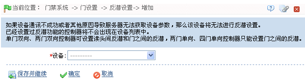
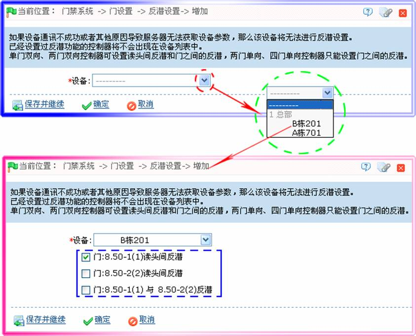
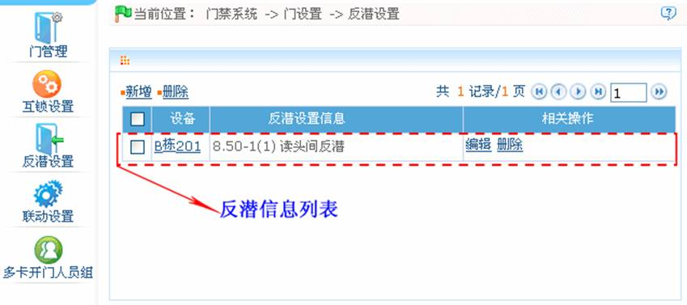

6.3.5反潜设置
反潜设置目前支持出入均反潜，有些特定的场合要求，刷卡验证的人员，从某个门刷卡进来就必须从某个门刷卡出去，刷卡记录必须一进一出严格对应。进门未刷卡，尾随别人进来，出门刷卡时系统就不能通过，如果出门未刷卡，尾随别人出去，再刷卡进来系统就不能通过。或者某人刷卡进来后，再将卡给其他人使用，试图进来，系统也会拒绝该人通过。如果一个人刷卡不进门，再次刷卡时将无法通过，出门亦然。用户只需在设置中启用该功能就可以使用，该功能一般用于监狱、部队、国防、科研、银行金库等场合。
新增反潜设置操作步骤：
1、点击【门禁】 【门设置】
【门设置】 【反潜设置】à【新增】，进入新增反潜设置页面：
【反潜设置】à【新增】，进入新增反潜设置页面：

2、选择设备（N门控制器），系统根据选择设备，显示可供选择反潜设置信息。
3、根据需要选择反潜设置（门或读头不重复的反潜，可多选），如下图所示：

 备注：因为一个设备只能对应一条反潜设置的记录，所以在新增时，在设备的下拉列表中时无法看到已经进行过反潜设置的设备。删除已设置的反潜信息，对应的设备将重新回到下拉列表中，因为设备所控制门数不同，设置而有所不同。
备注：因为一个设备只能对应一条反潜设置的记录，所以在新增时，在设备的下拉列表中时无法看到已经进行过反潜设置的设备。删除已设置的反潜信息，对应的设备将重新回到下拉列表中，因为设备所控制门数不同，设置而有所不同。
控制器可设置读头间反潜和门之间的反潜。持卡人从A门进入，必须从B门出来。这个功能主要用于通道管理和门票管理。
-
 单门控制器的反潜设置
单门控制器的反潜设置
门读头间反潜。
-
两门控制器的反潜设置
门-1读头间反潜、门-2读头间反潜、门-1与门-2反潜。
-
四门控制器的反潜设置
门-1与门-2反潜、门-3与门-4反潜、门-1/门-2与门-3/门- 4反潜、门-1与门-2/门-3反潜、门-1与门-2/门- 3/门-4反潜、门-1读头间反潜、门-2读头间反潜、门-3读头间反潜、门-4读头间反潜。
 说明：上述读头包含接入到门禁控制板上的韦根读头和inBIO读头。韦根读头的单门、双门控制器又分为出、入读头，四门控制器均为入读头。inBIO读头中的1、2读头（485地址（或机器号）为1、2，下同）对应门1；3、4读头对应门2，依此类推。设置门间反潜或者读头间反潜时，不需要考虑读头是韦根读头还是inBIO读头，只需要判断出入状态（即当前读头是出读头还是入读头）根据实际需要进行设置。韦根读头的编号或者inBIO读头的485地址，奇数为入读头，偶数为出读头。
说明：上述读头包含接入到门禁控制板上的韦根读头和inBIO读头。韦根读头的单门、双门控制器又分为出、入读头，四门控制器均为入读头。inBIO读头中的1、2读头（485地址（或机器号）为1、2，下同）对应门1；3、4读头对应门2，依此类推。设置门间反潜或者读头间反潜时，不需要考虑读头是韦根读头还是inBIO读头，只需要判断出入状态（即当前读头是出读头还是入读头）根据实际需要进行设置。韦根读头的编号或者inBIO读头的485地址，奇数为入读头，偶数为出读头。
3、设置完成后，单击【确定】按钮，保存并返回反潜设置页面，此时反潜设置列表中将显示刚新增的反潜设置，如下图所示：

 注意：编辑时不能修改设备，只能修改反潜设置，如果不需要再对该设备应用反潜设置，需将该条反潜设置记录删除，当删除某个设备记录时，如果其存在反潜设置记录，则会一并删除。操作方法同编辑和删除互锁设置信息一致，详情请参见6.3.4 互锁设置。
注意：编辑时不能修改设备，只能修改反潜设置，如果不需要再对该设备应用反潜设置，需将该条反潜设置记录删除，当删除某个设备记录时，如果其存在反潜设置记录，则会一并删除。操作方法同编辑和删除互锁设置信息一致，详情请参见6.3.4 互锁设置。